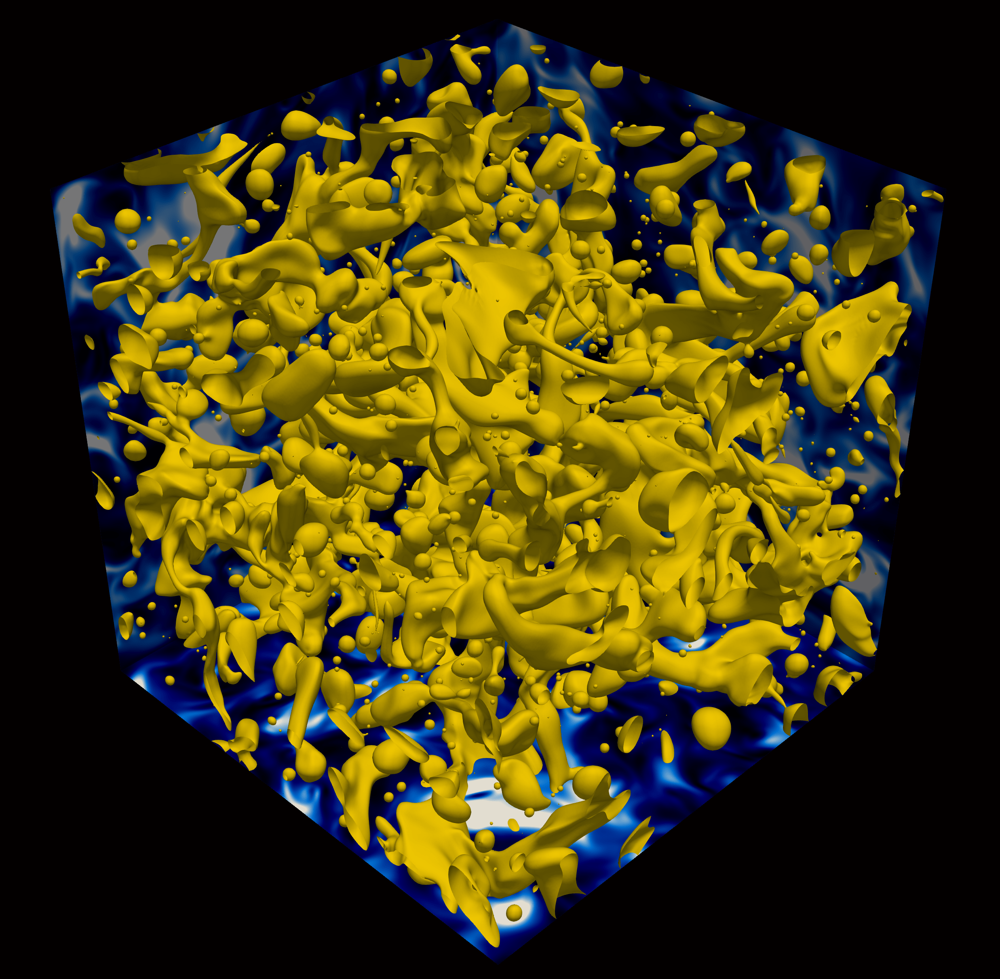
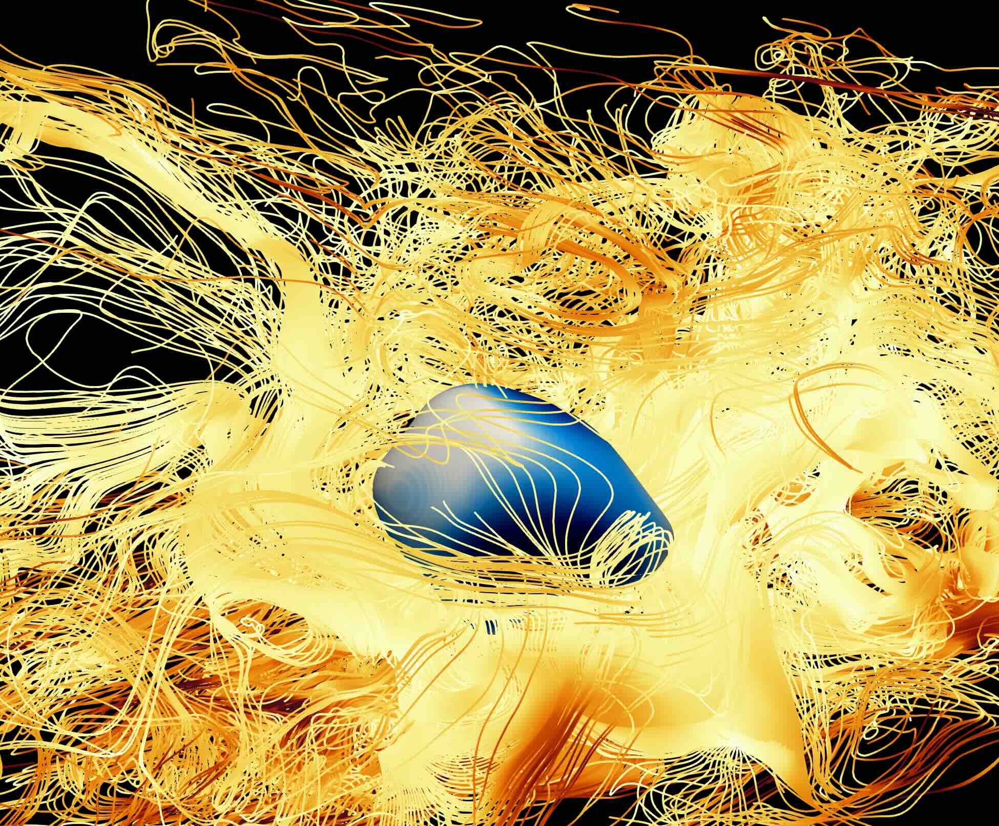
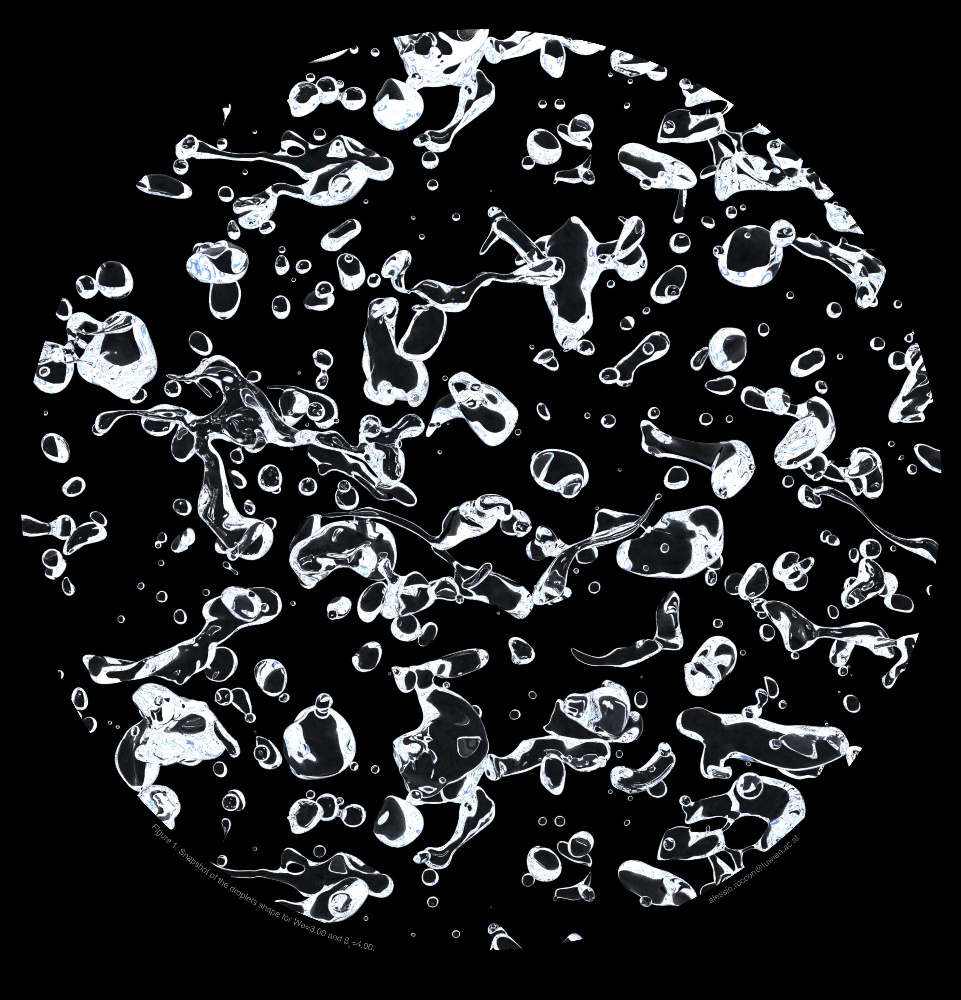
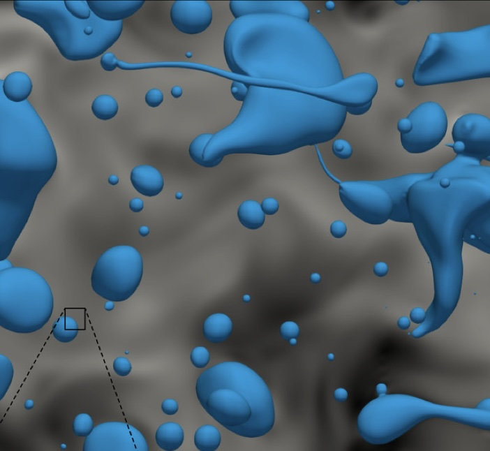
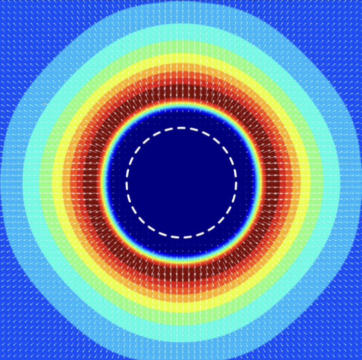
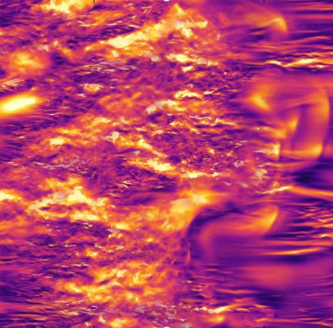
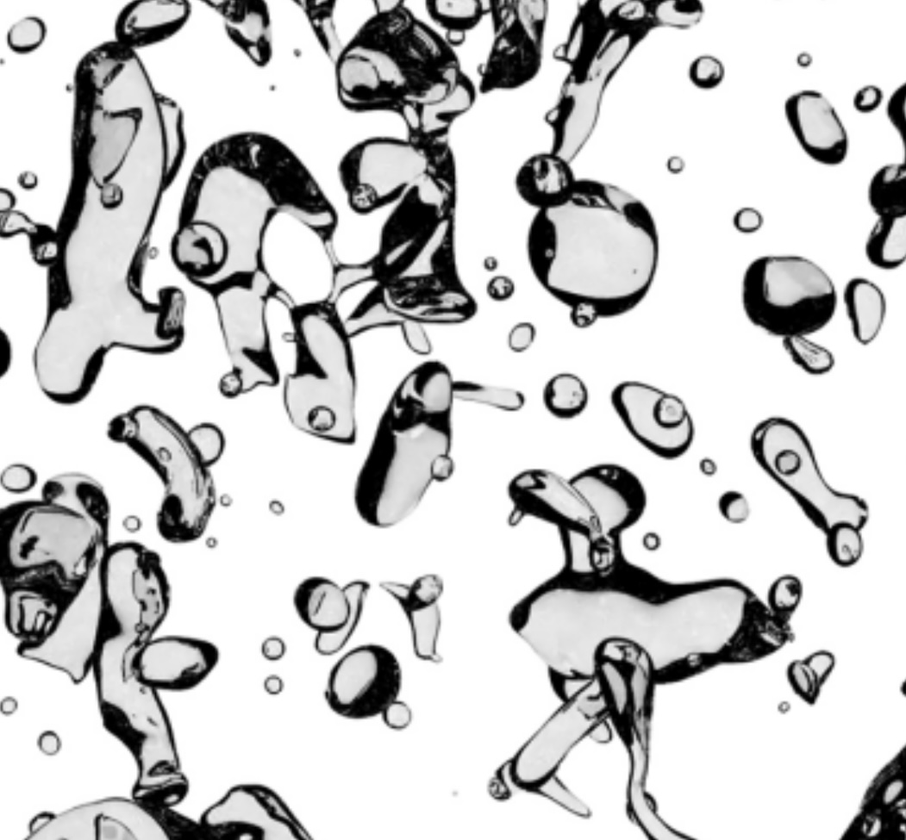
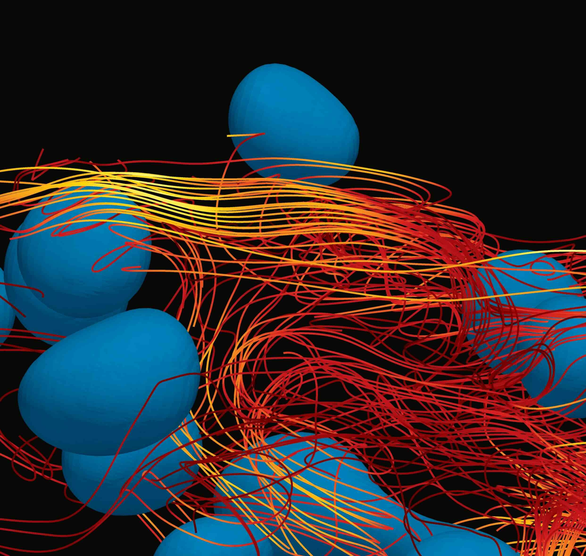

A. Roccon, L. Enzenberger, D. Zaza and A. Soldati; MHIT36: A phase-field code for GPU simulations of multiphase homogeneous isotropic turbulence,
CPC (under review)
article

U. Bau, F. Mangani, A. Roccon and A. Soldati; Transfer dynamics of hydrophilicand lipophilic surfactants in turbulent oil−water emulsions
Langmuir (2025)
article

A. Roccon, G. Soligo and A. Soldati; FLOW36: A spectral solver for phase-field based multiphase turbulence simulations on heterogeneous computing architectures,
Comput. Phys. Commun. (2025)
article

M. Schenk, G. Giamagas, A. Roccon, A. Soldati and F. Zonta; Computationally efficient and interface accurate dual-grid phase-field simulation of turbulent drop-laden flows,
J. Fluids Eng. (2024)
article

A. Roccon; Boiling heat transfer by phase-field method,
Acta Mech. (2024)
article

A. Roccon; A GPU-ready pseudo-spectral method for direct numerical simulations of multiphase turbulence,
Proc. Comput. Sci. (2024)
article

A. Roccon, F. Zonta and A. Soldati; Turbulent drag reduction in water-lubricated channel flow of highly viscous oil,
PRF (2024)
article
G. Giamagas, A. Roccon, F. Zonta and A. Soldati; Turbulence and interface waves in stratified oil–water channel flow at large viscosity ratio,
FTAC (2024)
article
F. Mangani, A. Roccon, F. Zonta and A. Soldati; Heat Transfer in Drop-Laden Turbulent Flows,
J. Fluid Mech. (2024)
article

A. Roccon, F. Zonta and A. Soldati; Phase-field modeling of complex interface dynamics in drop-laden turbulence,
PHys. Rev. Fluids (2023)
article
G. Giamagas, A. Roccon, F. Zonta and A. Soldati; Propagation of capillary waves in two-layer oil–water turbulent flow,
J. Fluid Mech. (2023)
article
F. Mangani, G. Soligo, A. Roccon, and A. Soldati; Influence of density and viscosity on deformation, breakage, and coalescence of bubbles in turbulence,
Phys. Rev. Fluids (2022)
article
J. Wang, F. Dalla Barba, A. Roccon, G. Sardina, A. Soldati, F. Picano; Modelling the direct virus exposure risk associated with respiratory events,
Royal Soc. Interface (2022)
article
J. Wang, M. Alipour, G. Soligo, A. Roccon, M. De Paoli, F. Picano, A. Soldati; Short-range exposure to airborne virus transmission and current guidelines,
PNAS (2021) article
G. Soligo, A. Roccon, and A. Soldati; Turbulent flows with drops and bubbles: what numerical simulations can tell us—Freeman scholar lecture,
JFE (2021)
article
A. Roccon, F. Zonta and A. Soldati; Energy balance in lubricated drag-reduced turbulent channel flow,
JFM (2021)
article
G. Soligo, A. Roccon and A. Soldati; Effect of surfactant-laden droplets on turbulent flow topology,
Phys. Rev. Fluids (2020)
article
G. Soligo, A. Roccon and A. Soldati; Deformation of clean and surfactant-laden droplets in shear flow,
Meccanica (2020)
article
G. Soligo, A. Roccon and A. Soldati; Breakage, coalescence and size distribution of surfactant-laden droplets in turbulent flow,
JFM (2019)
article
A. Roccon, F. Zonta and A. Soldati; Turbulent drag reduction by compliant lubricating layer,
J. Fluid Mech. (2019)
article
G. Soligo, A. Roccon and A. Soldati; Mass-conservation-improved phase field methods for turbulent multiphase flow simulation,
Acta Mech. (2019) article
G. Soligo, A. Roccon and A. Soldati; Coalescence of surfactant-laden drops by phase field method,
J. Comput. Phys. (2019)
article
S. Ahmadi, A. Roccon, F. Zonta and A. Soldati; Turbulent drag reduction in channel flow with viscosity stratified fluids,
Comput. & Fluids (2018)
article
S. Ahmadi, A. Roccon, F. Zonta and A. Soldati; Turbulent drag reduction by a near wall surface tension active interface,
Flow. Turb. & Comb. (2018)
article

A. Roccon, M. De Paoli, F. Zonta and A. Soldati; Viscosity-modulated breakup and coalescence of large drops in bounded turbulence,
Phys. Rev. Fluids (2017)
article